Komentowanie i poroponowanie zmian
Nie jestem specjalistą w temacie, a w wielu miejscach nawet wprost proszę o kontakt, jeżeli ktoś portrafi odnieść się do moich wątpliwości, zatem pozwolę sobie opisać sposób w jaki to można zrobić. Generalnie zakładam, że wszystko to może zostać zrealizowane przez GitHuba.
Dla obeznanych z GitHubem
W skrócie zasady są takie:
- Przewiduję raczej jako Issue (nazywam to wszędzie potem zgłoszeniem), ale w ostateczności może być i "Pull Request". Chociaż w takim wypadku raczej lepiej by było i tak utworzyć issue, by osoby mniej obeznane wiedziały, że coś się w temacie dzieje.
- Bardzo proszę o sprawdzanie tego, co już wisi, żeby nie dublować tematów (chociaż nie będzie to tragedia).
- W opisie bym prosił o podanie, której strony dotyczy zgłoszenie. Niżej jest sekcja "Jak znaleźć adres strony?" - tam jest skrin, który chyba wszystko tłumaczy, o co mi chodzi.
- Zgłoszenia w miarę możliwości po polsku, żeby wszyscy rozumieli. Jakby ktoś umiał słabo polski (w sumie wtedy pytanie, jakim cudem to rozumie xd), to wtedy można też w innym języku, to spróbujemy przetłumaczyć.
Sam GitHub jest przede wszystkim platformą dla programistów i służy do przechowywania i synchronizacji pracy nad kodem. Nie mniej jednak ostatecznie zdecywoałem się na tą platformę, ponieważ tutaj najłatwiej mogę udostępnić teksty jako stronę internetową, mając od razu zapewnione możliwości komentowania i proponowania zmian w tekstach przez inne osoby.
Note
Chciałbym, żeby możliwość interakcji ze mną była możliwa dla jak najszerszej grupy odbiorców - nawet osób tzw. "nietechnicznych". Pewne kwestie wydają się mi (i zapewne nie tylko mi) oczywiste, ale wolę napisać więcej niż mniej. Dlatego opis ten jest bardzo szczegółowy i rozbudowany. Na początku rozdziałów dodałem wstawkę w sekcjach "Abstract".
Zakładanie konta
Abstract
Założenie konta na GitHubie jest darmowe i wymaga właściwie tylko adresu mailowego do podania.
Na początku należy otworzyć stronę rejestracji GitHub: https://github.com/signup.
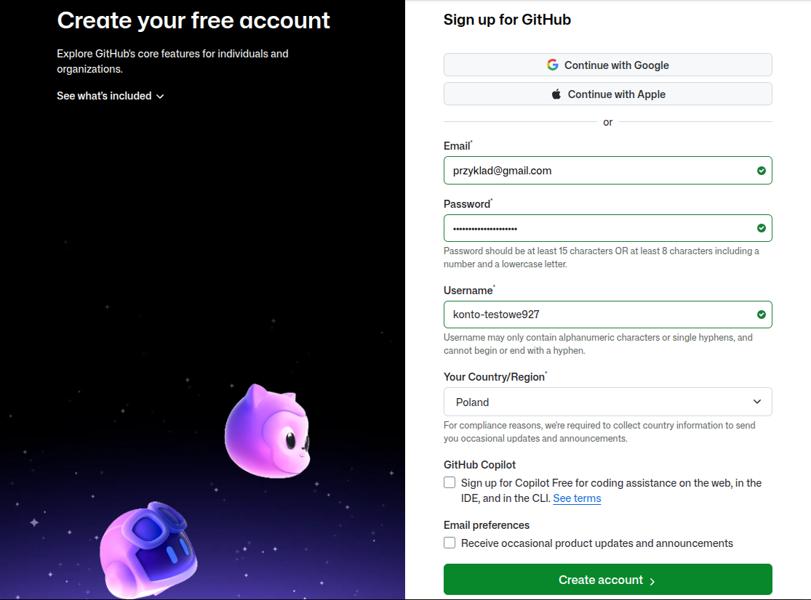
Na stronie tej należy kolejno podać:
- swój adres mailowy
- wymyślone przez siebie hasło
- wymyśloną przez siebie nazwę użytkownika - musi być różna od wszystkich dotychczasowych użytkowników portalu, więc znalezienie odpowiedniej nazwy może zająć nieco czasu. Co więcej, na dzień dzisiejszy w nazwach dopuszczalne są jedynie znaki alfabetu łacińskiego (nie można użyć znaków diakrytycznych np. ą, ę itd.), liczby oraz pauzy/minusy, z tymże te ostatnie nie mogą występować ani na pierwszym, ani na ostatnim miejscu nazwy.
- Kraj - zapewne Polska (Poland)
Dwa okienka (checkboxy) na dole można w razie wątpliwości zostawić odznaczone, szczególnie jeżeli nie planuje się używać konta GitHub do niczego innego.
Po kliknięciu przycisku "Create account" powinien pojawić się ekran z polem do wpisania kodu weryfikacyjnego. System powinien wysłać wiadomość z nim na podany adres mailowy, choć o może potrwać do kilku minut. Na dzień dzisiejszy składa się on z 6-ciu cyfr. Kod ten należy w prowadzić do tego pola i ewentualnie kliknąć klawisz "enter".
Co gdy kod nie przyjdzie na maila?
Po chwili od pokazania się ekranu z polem do wpisania kodu weryfikacyjnego (chyba koło minuty) na stronie powinien się pojawić pod polem do wpisania kodu weryfikacyjnego przycisk z napisem np. "Resend code". Warto go wtedy kliknąć, bo to powinno wywołać ponowne wysłanie kodu. Gdyby i to nie pomogło, to warto spróbować zrobić wszystko od początku np. następnego dnia.
Po pomyślnym logowaniu powinien pojawić się ekran logowania.
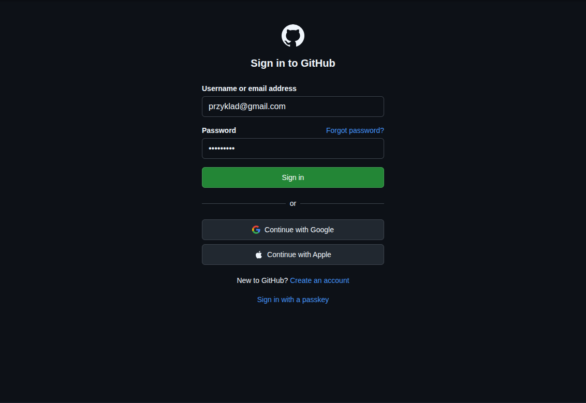
Tam należy wprowadzić podane wcześniej: adres mailowy i hasło. Po kliknięciu przycisku "Sign in" powinna zostać wyświetlona strona domowa GitHuba.
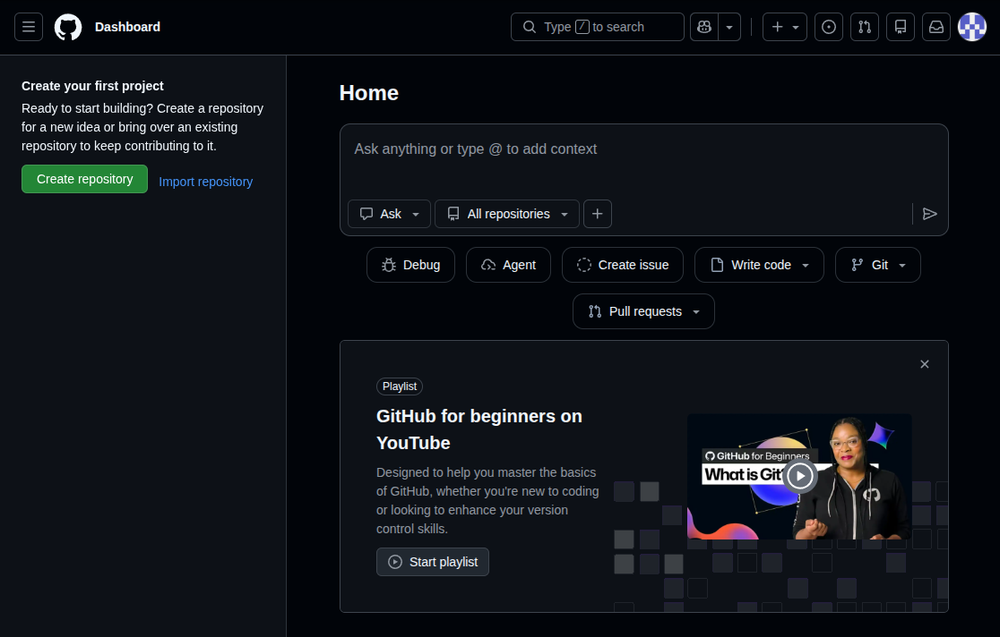
Zgłaszanie problemu
W związku z tym, że nie zakładam szybkiego wzrostu zainteresowania blogiem, wydaje mi się, że najwygodniejszą formą komunikacji będą "issues" (zwanych dalej zgłoszeniami). Sama koncepcja oryginalnie zakłada możliwość zgłaszania problemów dotyczących programów bez odnoszenia się do kodu źródłowego, w związku z czym sprowadza się właściwie do wpisania pojedynczego fragmentu tekstu.
Aby to zrobić należy wejść na stronę repozytorium GitHub projektu: https://github.com/kodziarz/drobnoustroj.
Info
W tym miejscu znajdują się pliki źródłowe projektu, które można swobodnie przeglądać. Część z nich ma znaczenie czysto techniczne (np. konfiguracja strony w pliku mkdocs.yml), jednak w folderze "docs" znajdują się już pliki zawierające właściwi tekst bloga.
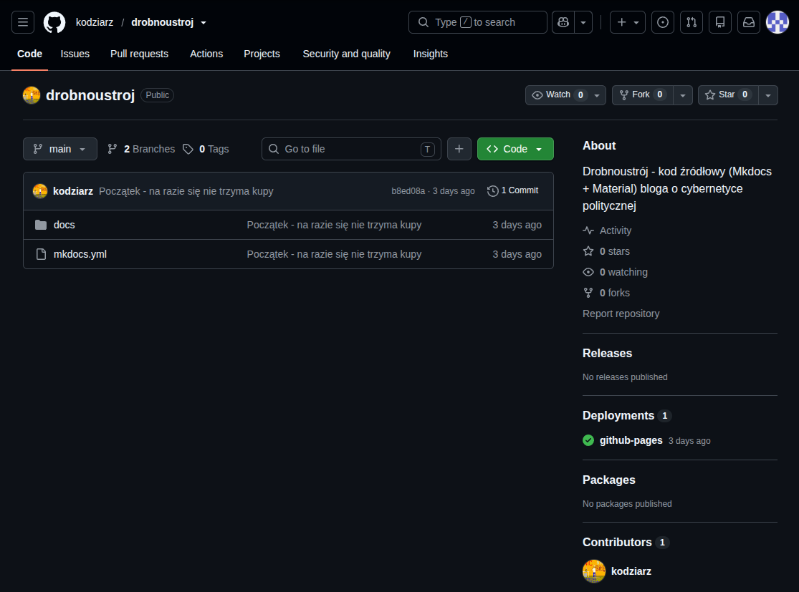
Aby dodać zgłoszenie należy kliknąć zakładkę "Issues" na w górnej części ekranu.
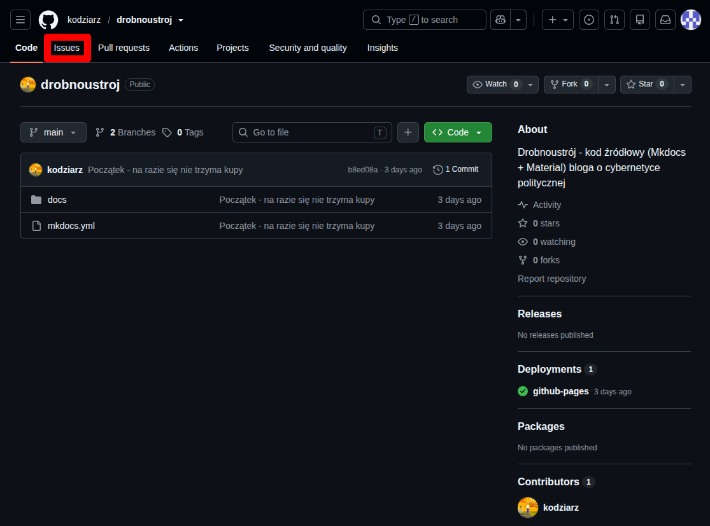
Wtedy wyświetli się strona zawierająca listę dochczasowych zgłoszeń. Na obrazku w tym miejscu widnieje napis "No results", poniważ wtedy nie było jeszcze żadnych zgłoszeń. Na tym etapie warto zweryfikować, czy zaganienie, które zamierza się zgłosić, nie zostało już przez kogoś zgłoszone - wówczas nie ma potrzeby tego robić.
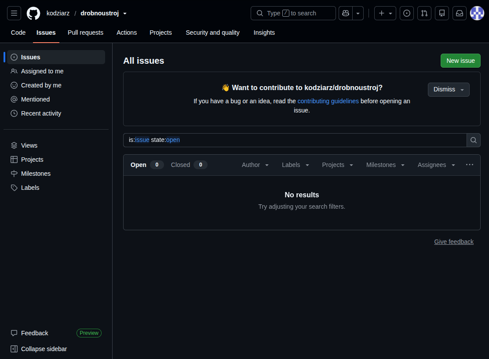
Dodanie nowego zgłoszenia rozposzyna się od kliknięcia przycisku "New issue". Na dzień dzisiejszy jest to zielony przycisk znajdujący się w prawym górnym rogu.
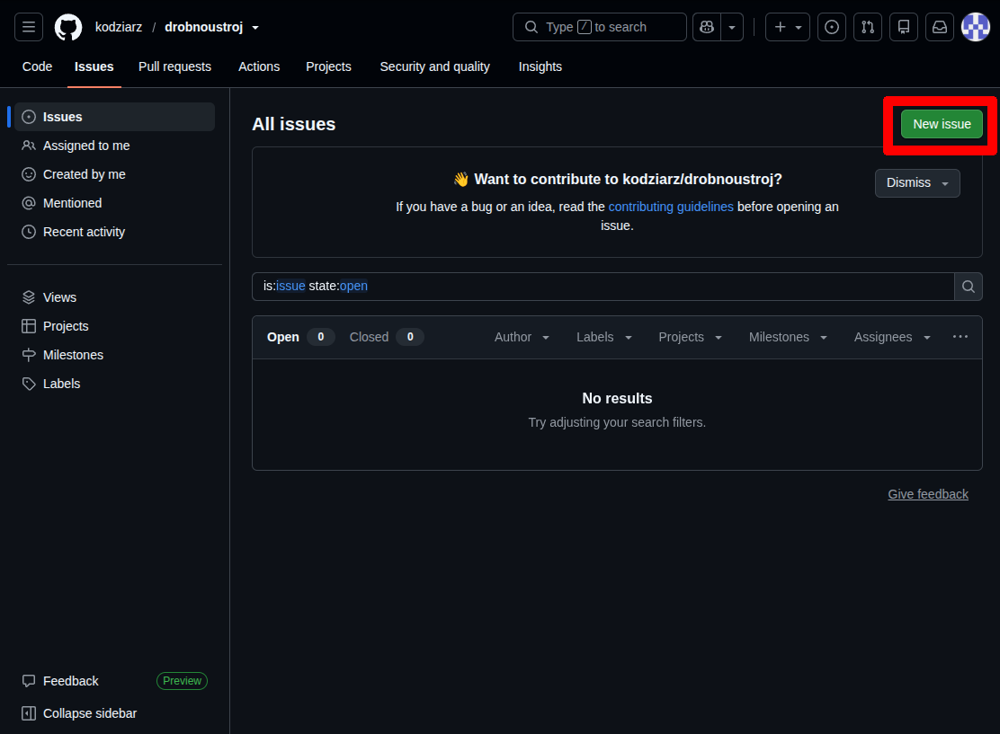
Po jego kliknięciu pokaże się strona tworzenia zgłoszenia.
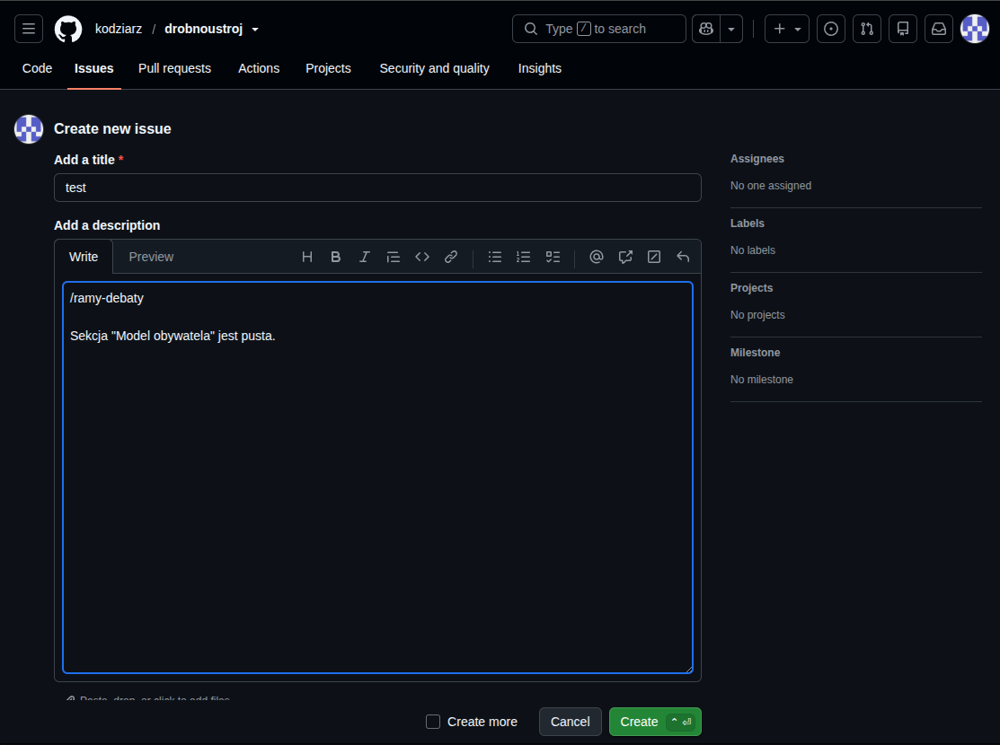
Na stronie tej należy wprowadzić:
- tytuł zgłoszenia
- opis zgłoszenia
W przypadku opisu warto w pierwszej linii napisać adres strony, której dotyczy zgłoszenie.
Jak znaleźć adres strony?
Najłatwiej w nowej karcie otworzyć bloga (pod adresem: https://kodziarz.github.io/drobnoustroj) i tam znaleźć stronę, do której tekstu chce się odnieść.
Jak otworzyć nową kartę?
Najłatwiej skrótem klawiszowym "ctrl" + t (przytrzymując klawisz "ctrl - lewy-dolny róg klawiatury - kliknąc klawisz t). Po znalezieniu adresu można wrócić do tworzenia zgłoszenia za pomocą skrótu "ctrl" + w.
Po otwarciu tej strony na pasku adresu przeglądarki będzie widniał adres tej strony. Do opisu zgoszenia wystarczy wprowadzić wszystko, co występuje po "https://kodziarz.github.io/drobnoustroj" (zaznaczone na obrazku).
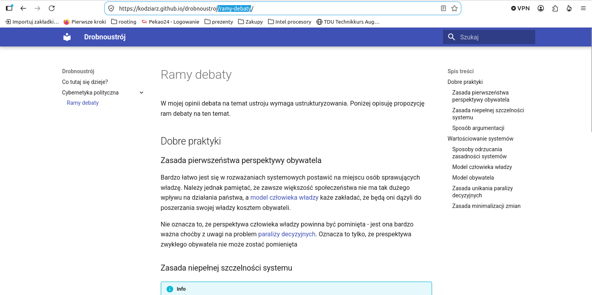
Po wprowadzeniu tych danych wystarczy kliknąć przycisk "Create". Na dzień dzisiejszy znajduje się on pod polem tekstowym na opis zgłoszenia, z prawej strony i jest zielony.
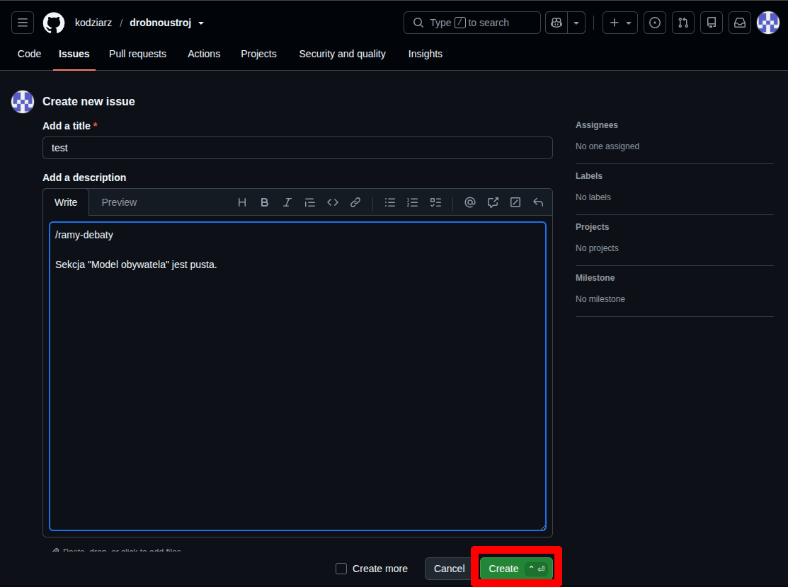
Po wszystkim powinna zostać wyświetlona strona zgłoszenia jak na obrazku poniżej. Oznacza to, że zgłoszenie zostało pomyślnie dodane.
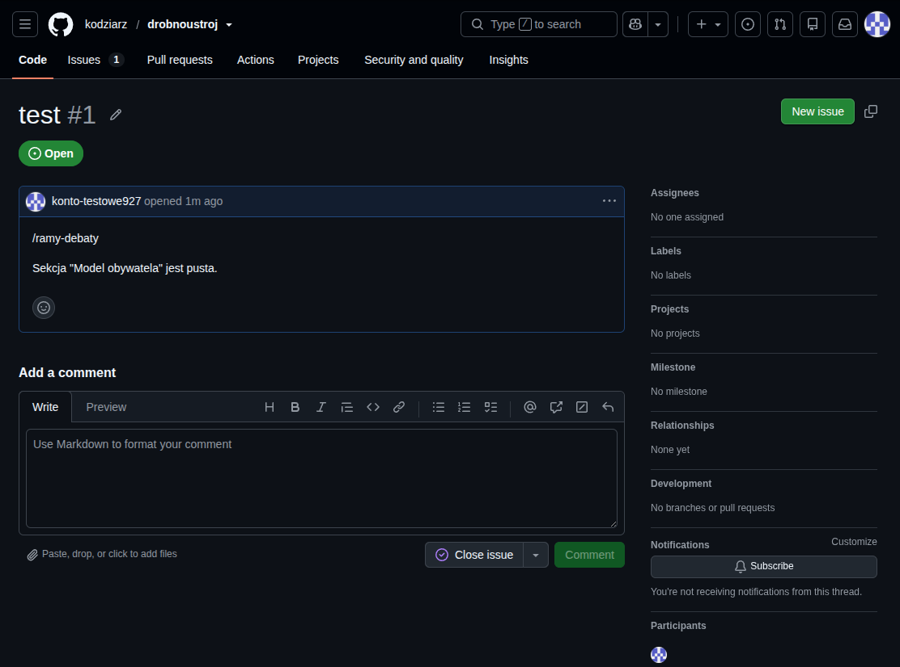
TODO
Zakładanie konta pocztowego??